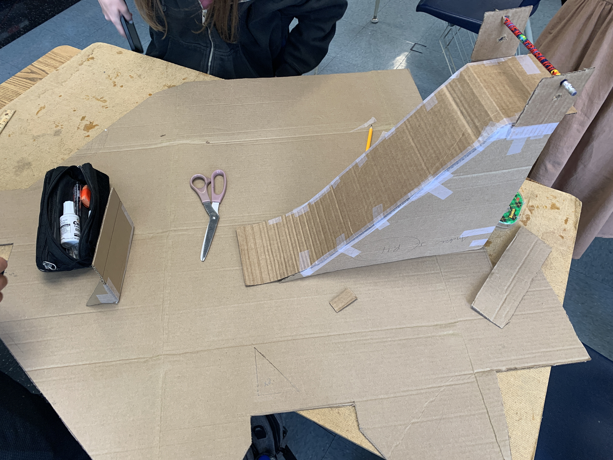

| Week & Date |
Blog |
Media |
| Week Two (9/2/22) |
This week there was plenty of new activities and things to learn.
I learned more about safety and was shown what type of tools we have in the schools'
workshop. We also learned CAD with tinkerCad. With this we will be creating a rube goldberg
machine model. We also had a challenge to replicate an object from home in tinkerCad. I attempted to create
a camera, but it did not look as nice as I would've wanted.
|
 |
| Week Three (9/9/22) |
This was a short week as we had monday off because of Labor Day and had a Friday minimum
day. This week we finished touching up our 3d models of the Rube Goldberg machines in TinkerCad.
This week's challenge was to accurately measure the letter 'E' onto a piece of paper.
We then traded with another person and had to redraw their measured 'E' and copy their measurements
and cut it out.I think I measured my letter 'E' very accurately in centimeters. |
n/a |
| Week Four (9/16/22) |
This week we began to start the building process of the Rube Goldberg Machine. Before that, We discussed as
a group to choose whose machine we would be building. We ultimately chose Linnea's machine as it was simple and
looked easy to build. We started to sketch out each panel of the machine on wednesday and by friday we were
putting the pieces of cardboard together. We almost finished on the friday but we had a slight issue with our
pulley that needed to be fixed. |
 |
| Week Five (9/23/22) |
This week consisted of working and finishing our Rube Goldberg Machine. We had basically finished on monday
but had to adjust the pulley to make the start sequence "hands free". We ended up tying the string to a bag
and cut it to start the machine. We finished completely on wednesday and tested it. It worked first try as seen in
the video below. Friday was a free day since we had already finished. I worked on this website and cleaned
the table of blogs up making it change colors on hover. We were able to visit the other class' machines and saw
how different theirs were to ours. |
 Video
Video
|
| Week Six (9/30/22) |
During This week we learned about a new type of engineering. Computer Engineering is where you design and
build computer parts. You have to code the hardware and correct firmware to tell the hardware what to speak
with and what they can or cannot do. Our challenge/lab for this week was to dissect a Laptop. These broken school
laptops were already at the end of their lifespan so no live laptops were harmed. This was fun and I learned that
I need to finish things on the same day or else I forget where things are supposed to go. |
|
| Week Seven (10/7/22) |
This week we started a new type of engineering. Bio Engineering is a type of engineering that consists
of redesigning and producing things that will benefit or go into living objects. For our project this week we
made a tinker Cad design on a prosthetic that would go into an animal. I made a prosthetic paw for a red panda.
It would have been 3d printable and have a small pressure plate to make the fingers functioning. |
|
| Week Eight (10/14/22) |
This week we begin a new type of Engineering. Aerospace engineering is creating parts of an airplane or
rockets. For example multiple companies work on one product that goes into a larger aircraft. For the project
we will be creating a model rocket with bottles. I will be 3d printing parts to attach onto the bottle using the
3d printer I have at home. I will have an aerodynamic nose with a low drag coefficient and a base with 3 fins to
help with stability without creating too much drag. |
 |